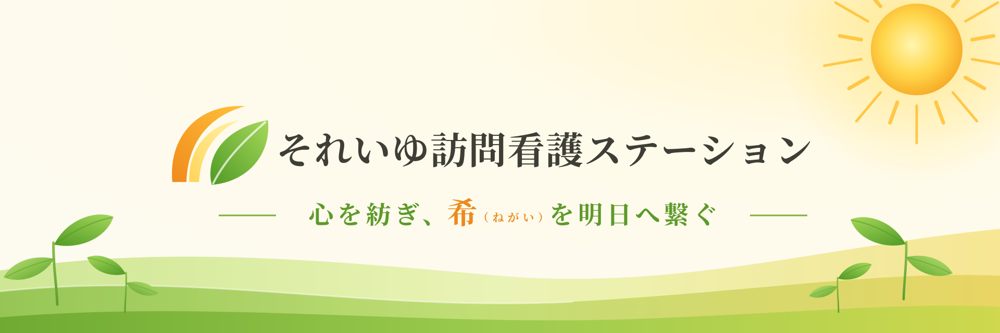

基本理念・ビジョン
利用者・家族の
「最期まで生きる支援」を
大切にする
看護師のキャリア形成を
「叶えたい未来」を明確にした
支援を行う
利用者自身が自分の生き方を考え、その意思が途切れないよう支えます。
病院と地域、多職種のあいだに壁を作らず、想いを繋ぎます。
救急・集中治療領域の視点を、在宅の安心につなげます。
学び続ける仲間を支え、スタッフ一人ひとりの成長を育みます。
私たちと一緒に、その人らしい最期まで寄り添う看護をしませんか。
シームレスな未来を創る。私たちが大切にしている5つの価値観です。